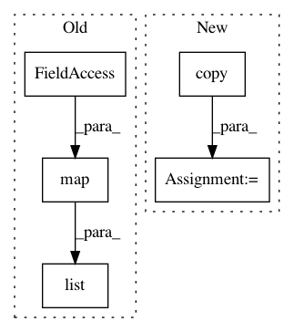

68759527b6e4531be9dd03fae3d3b20cff6178be,pyprob/distributions.py,Empirical,map,#Empirical#Any#,148
Before Change
return ret
def map(self, func):
return Empirical(list(map(func, self.values)), list(map(torch.log, self.weights)))
@property
def min(self):
After Change
return ret
def map(self, func):
ret = copy.copy(self)
ret.values = list(map(func, self.values))
ret._mean = None
ret._mean_unweighted = None
ret._variance = None
In pattern: SUPERPATTERN
Frequency: 3
Non-data size: 5
Instances
Project Name: pyprob/pyprob
Commit Name: 68759527b6e4531be9dd03fae3d3b20cff6178be
Time: 2018-04-01
Author: atilimgunes.baydin@gmail.com
File Name: pyprob/distributions.py
Class Name: Empirical
Method Name: map
Project Name: pymc-devs/pymc3
Commit Name: 32eb4d6faa3916d1cfbff69f58c927017beced89
Time: 2013-12-10
Author: jsalvatier@gmail.com
File Name: pymc/tests/test_distributions.py
Class Name:
Method Name: check_logp
Project Name: pymc-devs/pymc3
Commit Name: 32eb4d6faa3916d1cfbff69f58c927017beced89
Time: 2013-12-10
Author: jsalvatier@gmail.com
File Name: pymc/tests/test_distributions.py
Class Name:
Method Name: check_dlogp